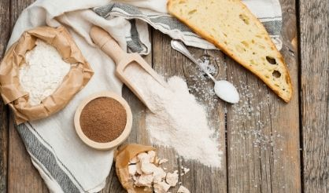
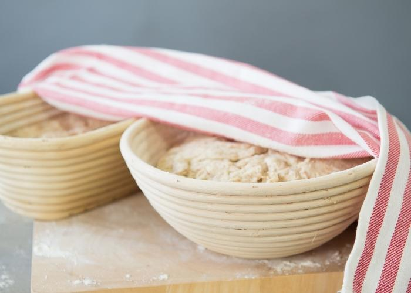
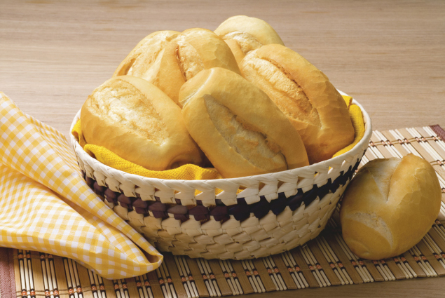

Bread is an essential food, deeply ingrained in cultures around the world. It is mainly composed of flour, water, yeast and sometimes additional ingredients such as salt, fat and various grains.
Bread production follows a baking process that encompasses several key steps:
Ingredient Combination: The basic elements - flour, water, yeast and salt - are mixed into a dough. This mixing can be done manually or using devices such as mixers.
Kneading: The dough is kneaded to increase the gluten, a protein found in the flour that provides structure and elasticity to the dough.
Fermentation: The dough is put to rest, allowing the yeast to produce gases, including carbon dioxide. That allows the dough to rise, resulting in a lighter and airier texture.

Division and Shaping: The yeasted dough is divided in portions and shaped in various forms, like round breads, baguettes or sandwich breads.
Final Resting Period: The shaped breads go through a short period of final fermentation. That increases the flavor and the texture of the bread.
Baking: The breads are baked in ovens until the outer part achieves an attractive and crispy golden aspect, while the interior part is meant to be firmer.
Cooling: The breads are taken out of the oven and left to cool, allowing the baking process to be completed and the bread to be managed safely.
The world of bread is vast, offering a wide variety of tastes and flavors. Besides the traditional white bread, there are the whole grain ones that are made with whole wheat flour, multigrain breads with diverse types of seeds and grains, and naturally fermented breads, like the sourdough. In addition to providing carbohydrates, it can be a font of nutrients like vitamins, minerals and fibers, depending on its composition. Alongside your nutritional value, bread also holds significant cultural and social relevance, playing an important role in celebrations and traditions for years.